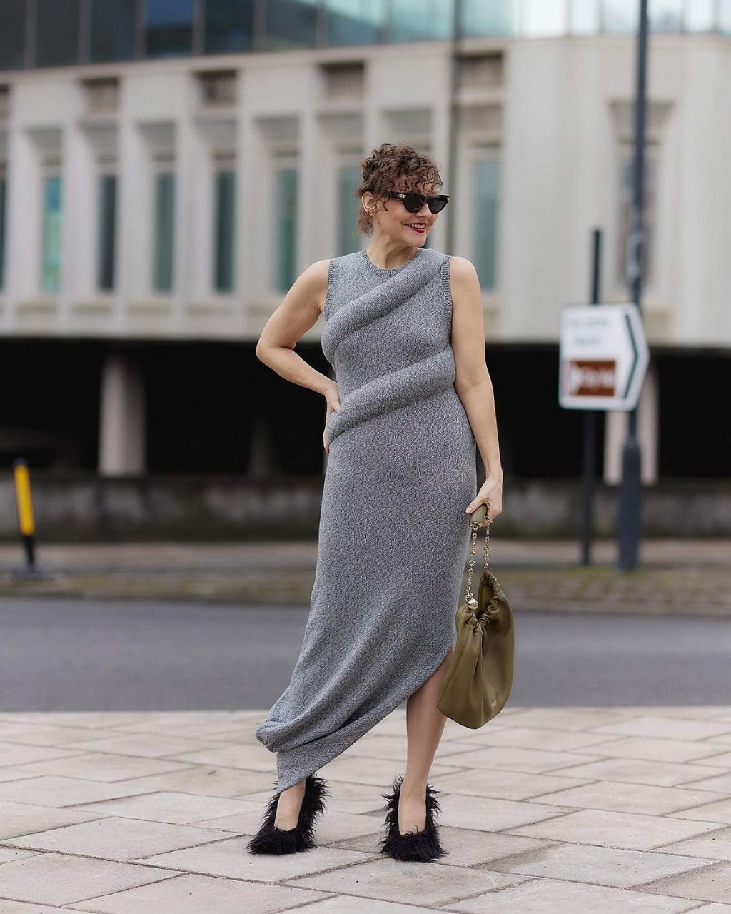
Largo, Sin mangas, Entallado. Color gris melange
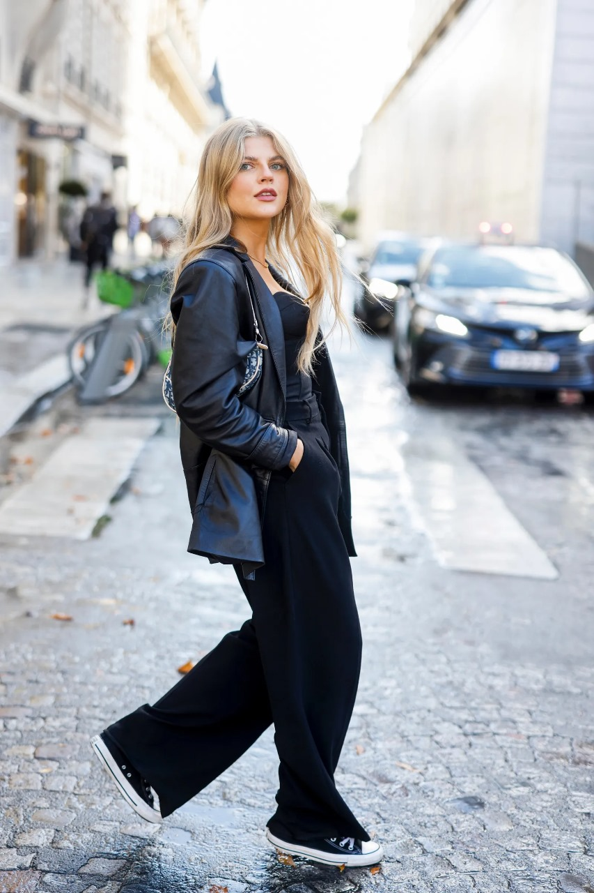
Conjunto juvenil. Chaqueta manga larga y pantalon amplio
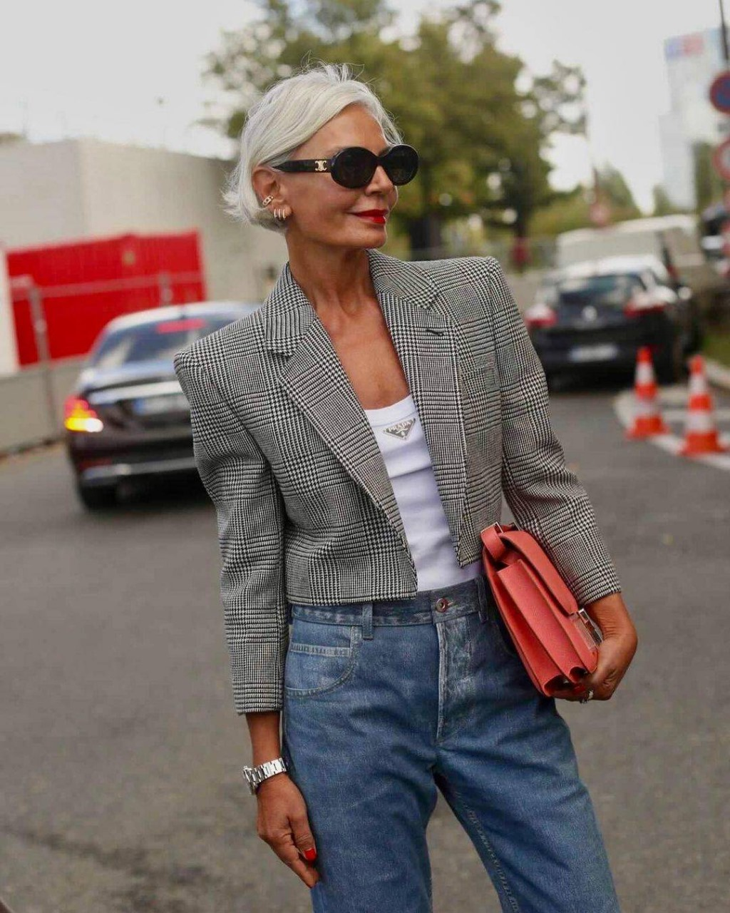
Chaqueta corta entallada cuadrillé.
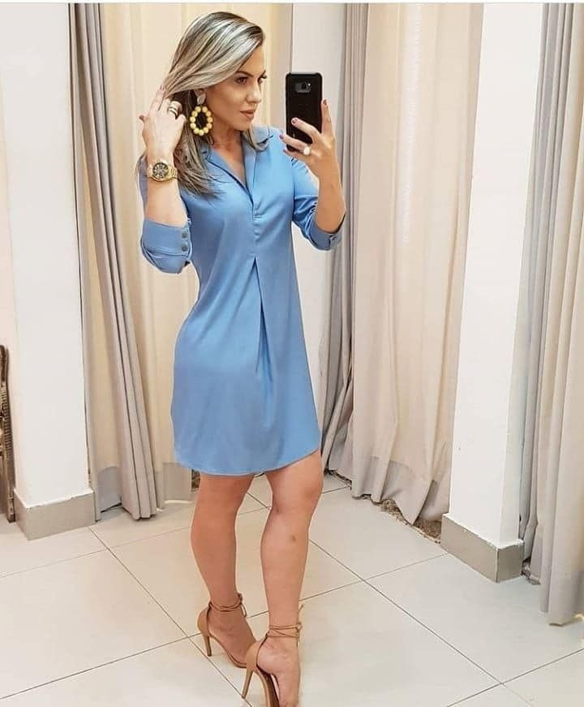
Vestido de Seda manga 3/4 color turquesa con falda corta
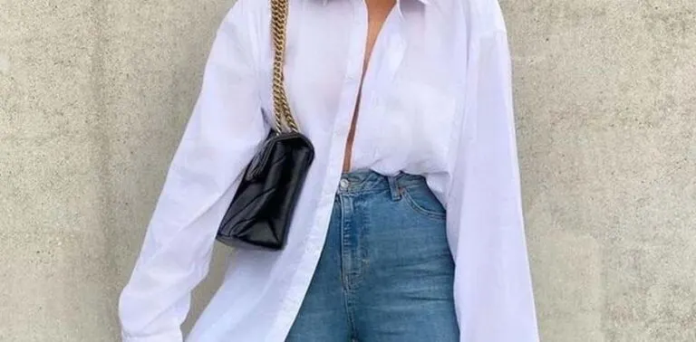
Camisola oversize blanca con Jean clásico
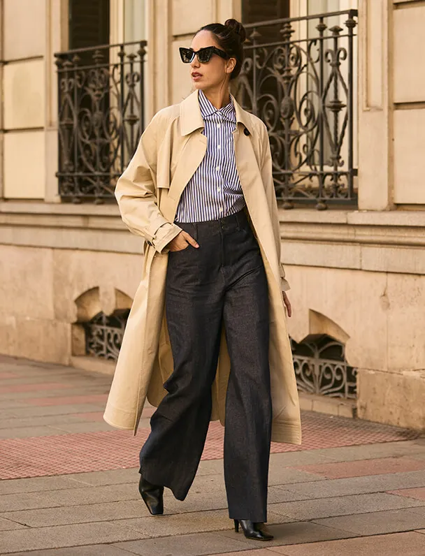
Sobretodo largo beige con camisa clásica y pantalon corte ancho
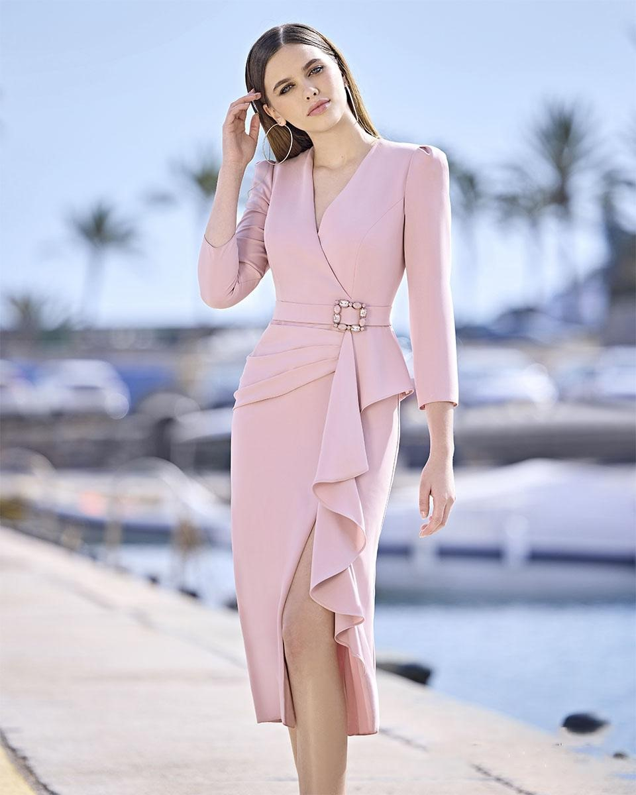
Conjunto de chaqueta manga 3/4 y pollera color rosa viejo, con volado
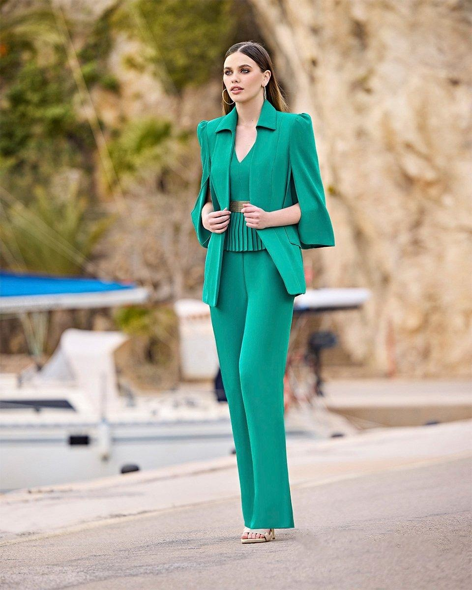
Saco color verde esmeralda, Musculosa entallada, saco de manga original y pantalon corte amplio
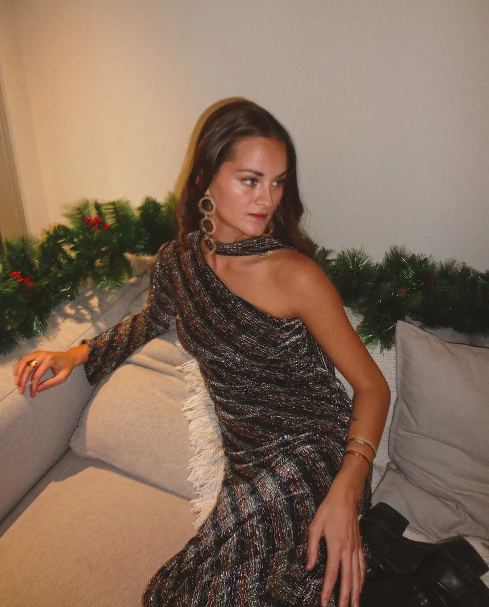
Vestido largo hombro descubierto con cuello mao
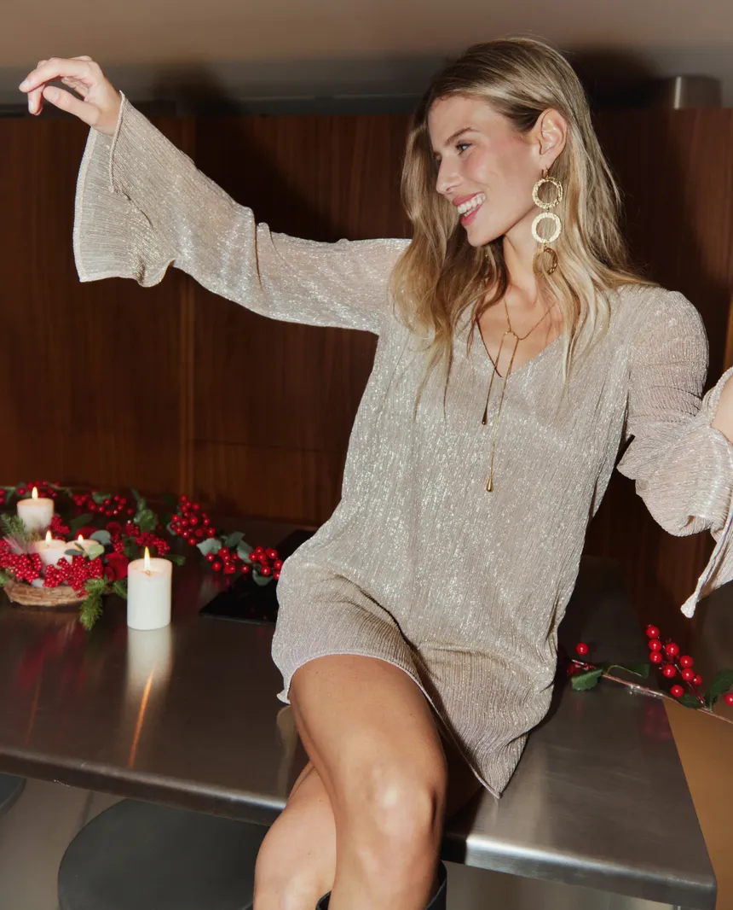
Camisola de gaza perlada con corte amplio, manga murcielago y escote en V
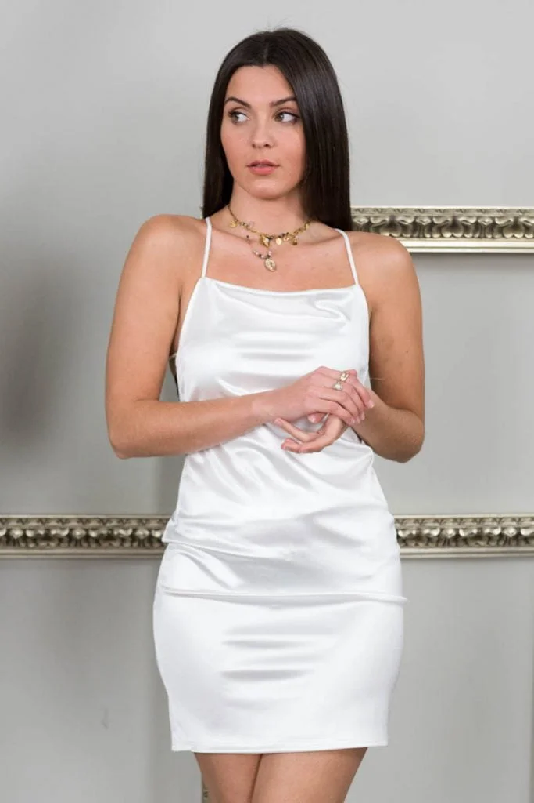
Color blanco, de razo con breteles finos.
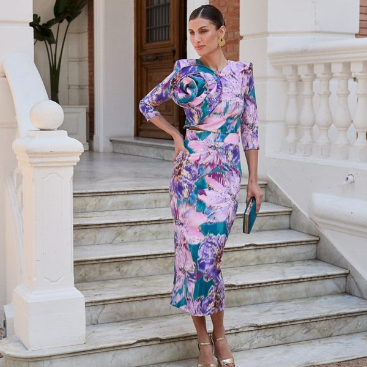
Vestido Largo 3/4 floreado entallado y con aplique de misma tela con forma de flor
“La colección informal me salvó el verano. Cómoda y con estilo.”
— Sofía, Mar del Plata“Los vestidos de fiesta tienen un brillo único. Me sentí espectacular.”
— Lucía, Córdoba“Me encantó la variedad de estilos, todo muy bien presentado.”
— Mateo, Rosario